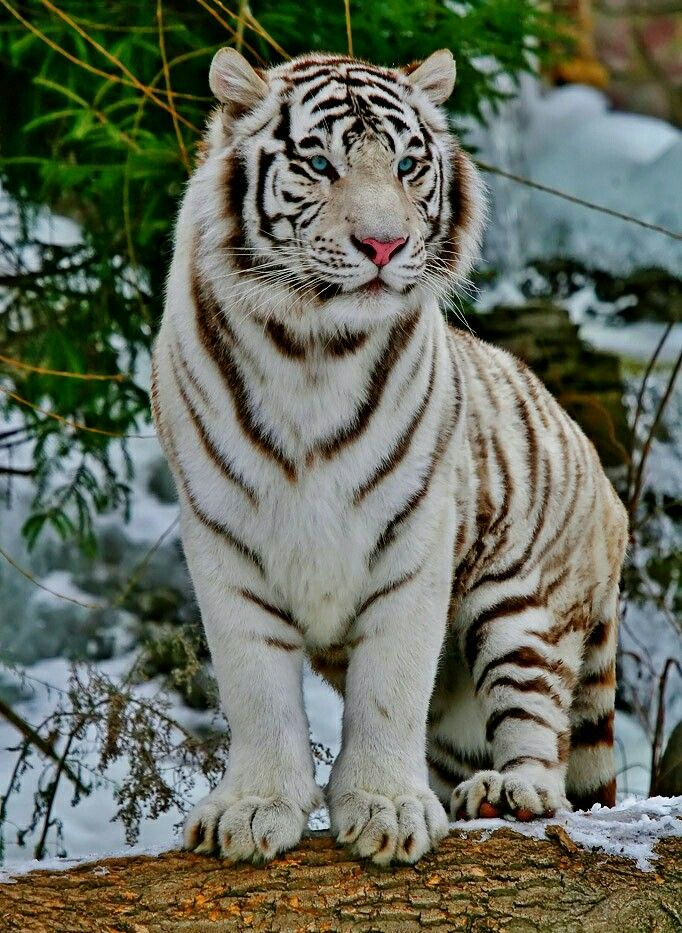
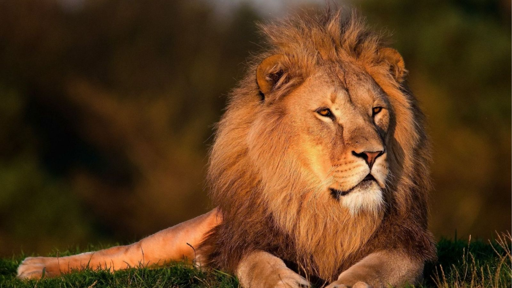
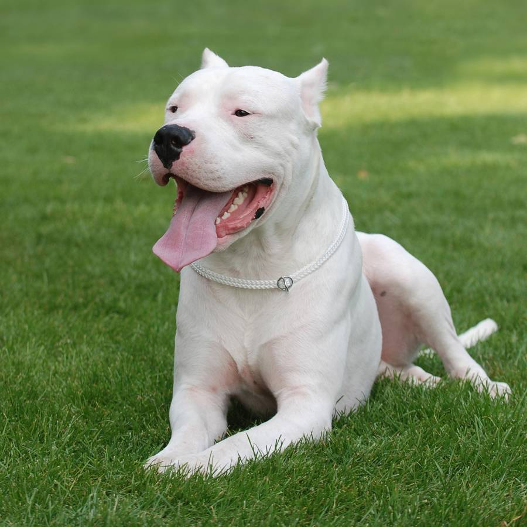
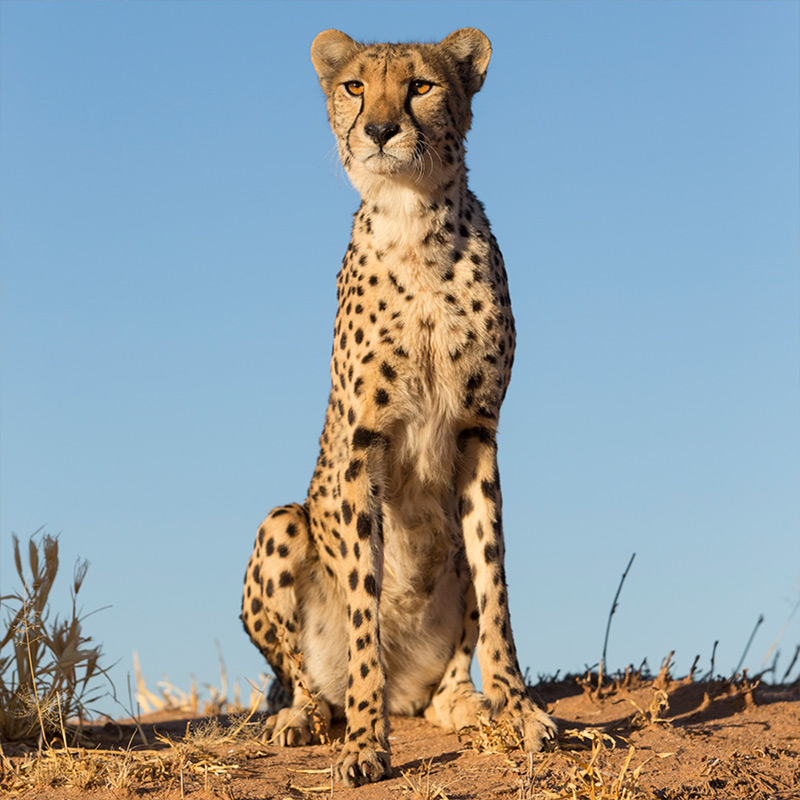

El gato esfinge es una raza sin pelaje, conocida por su carácter amigable y su apariencia única, fruto de una mutación genética natural. Aunque parece calvo, tiene una fina pelusa tipo gamuza, arrugas, orejas grandes y es conocido por ser extremadamente cariñoso, activo, inteligente y sociable.

El lobo siberiano es un animal salvaje adaptado a las bajas temperaturas, con un pelaje grueso que le permite sobrevivir en ambientes extremos. Es muy inteligente y organizado, ya que vive en manadas donde cada miembro cumple un rol. Se destaca por su resistencia, su agilidad y su capacidad para trabajar en equipo durante la caza.

El tigre es un animal salvaje fuerte y elegante, con gran capacidad de caza. Sus rayas lo ayudan a camuflarse en su entorno, y su fuerza y rapidez lo convierten en un depredador muy efectivo.

El león es un gran felino salvaje conocido como el “rey de la selva” por su fuerza, liderazgo y presencia imponente. Vive principalmente en sabanas y praderas de África, donde suele formar manadas organizadas llamadas “prides”. Los machos se reconocen fácilmente por su melena, que los hace ver más grandes y les sirve como protección durante enfrentamientos. Son animales carnívoros, cazadores poderosos y muy territoriales. Las hembras suelen encargarse de la caza en grupo, demostrando gran coordinación y estrategia. El león simboliza valentía, poder y dominio en la naturaleza.

El Dogo Argentino es una raza de perro fuerte, atlética y valiente, originaria de Argentina. Fue criado principalmente para la caza mayor, por lo que tiene gran resistencia, potencia y un excelente instinto protector. Es de tamaño grande, musculoso y de pelaje corto completamente blanco, lo que le da una apariencia imponente y elegante. A pesar de su fuerza, es un perro muy leal, inteligente y cariñoso con su familia, especialmente con los niños cuando está bien socializado. También es un excelente guardián, ya que es muy territorial y protector de su hogar.

El guepardo es un felino salvaje conocido por ser el animal terrestre más rápido del mundo, capaz de alcanzar velocidades de hasta 100 km/h en cortas distancias. Habita principalmente en las sabanas de África y tiene un cuerpo delgado, ligero y adaptado para la velocidad. Se reconoce fácilmente por sus manchas negras y las líneas oscuras que van desde los ojos hasta la boca. Es un cazador diurno que se basa en la rapidez y la agilidad más que en la fuerza. Aunque es un depredador eficaz, no suele ser agresivo y evita enfrentamientos con animales más grandes.